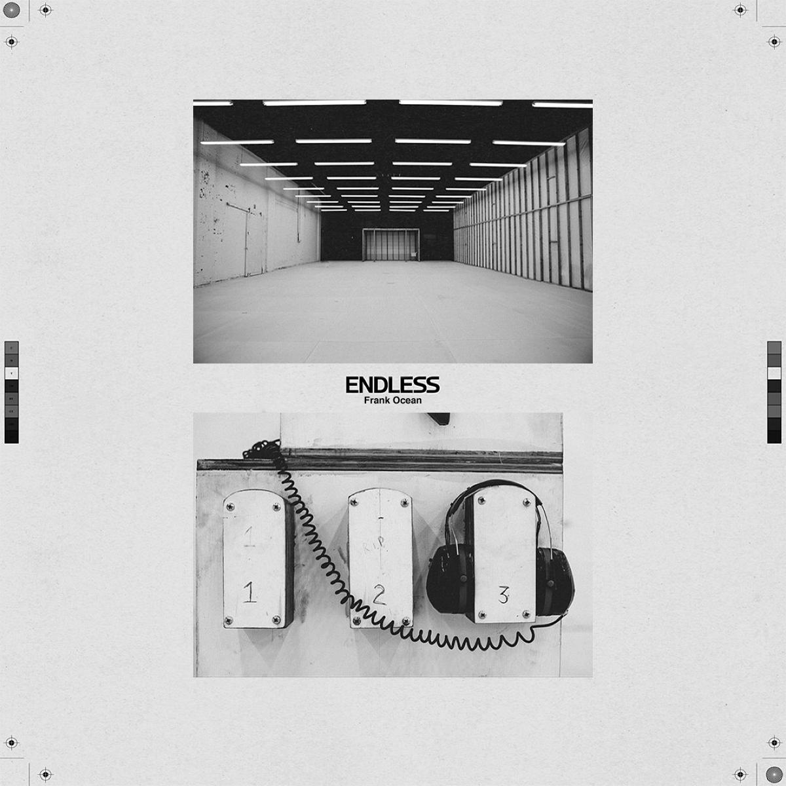

Endless é um álbum visual do cantor estadunidense Frank Ocean. Foi lançado em 19 de agosto de 2016 como um vídeo exclusivo para streaming na Apple Music, precedendo o lançamento de seu segundo álbum de estúdio Blonde em 20 de agosto. Endless foi posteriormente remasterizado e relançado em formatos físicos de áudio e vídeo em 27 de novembro de 2017.[3]
O álbum seguiu um período de controvérsia para Ocean, que estava em uma batalha altamente divulgada com a Def Jam Recordings, tornando-se tema de amplas discussões na mídia após seu lançamento. Endless foi gravado em diversos estúdios na Califórnia, além de Londres, Miami e Berlim, com produção principal de Ocean, Vegyn, Michael Uzowuru e Troy Noka; Ocean já havia colaborado anteriormente com Noka em sua mixtape de estreia de 2011, Nostalgia, Ultra.
Endless

| Lançamento | 19/08/2016 |
|---|---|
| Gêneros | R&B |
| Duração | 45:55 |